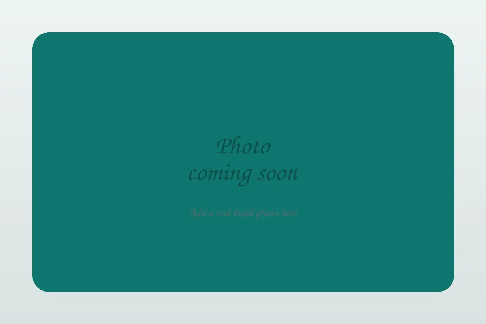

1980s · FC3S · Founder entry
1987 Mazda RX-7 Turbo II
In progress
The owner's #FCTrees FC3S build — a 1987 Turbo II with the 13B turbo rotary, documented from real work in the garage and from his own videos. This is the founder entry of the library: the page every later entry is measured against.
rotary turbo FC3S 13B
Spec sheet
| Year / Make / Model | 1987 Mazda RX-7 Turbo II |
|---|---|
| Chassis | FC3S (S4) |
| Engine | 13BT — 1,308 cc twin-rotor turbo rotary (654 cc per rotor) |
| Transmission | 5-speed manual |
| Power (factory) | 185 hp @ 6,500 rpm — verify in FSM |
| Torque (factory) | 183 lb-ft @ 3,500 rpm — verify in FSM |
The build so far
Turbo and intake work documented from the owner's videos: manifold stoning and install, freeze plug install with coolant bypass, a custom turbo coolant pipe, a Racing Beat downpipe, and carbon-filled PTFE intake gaskets proven on the car over about 1,200 miles. The full record is in the build log.
Gallery

images/README.md for naming and sizing.A note on specifications
Rotary specifications vary by engine family, generation, seal width, and part manufacturer. Treat the numbers on this page as a starting point for inspection, and always confirm the final specification in the factory service manual or the documentation for the exact seals and rotors you are using. Torque figures stated in videos are recorded as stated — not converted, not smoothed.